MochiMash
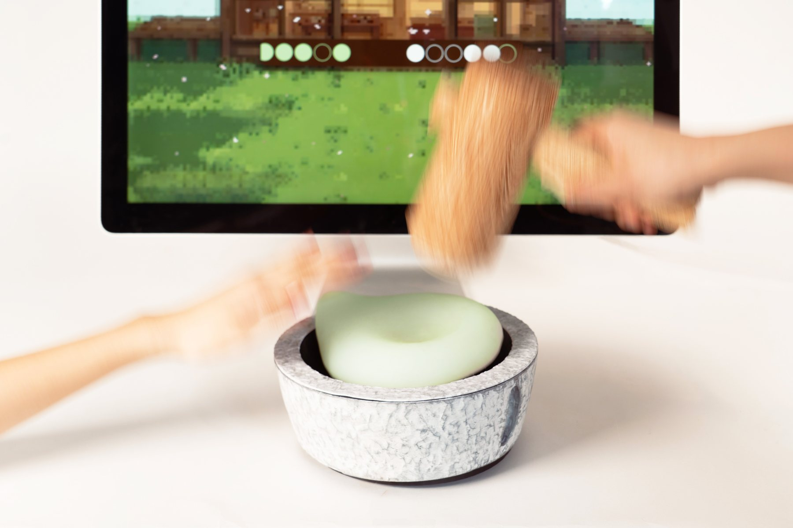
User-centered/interaction design
Mechanism design
Game design
4.043: Design Studio: Interaction Intelligence (Project I)
5 weeks, Spring 2026
Joanne Hong (MIT '27), Lucy Li (MIT Media Lab)
SOLIDWORKS
Electronics
Casting
FDM 3D printing
MochiMash is a two-player rhythm game inspired by the tradition of mochi pounding. As circles and squares flash across a one-pixel-row display, Player 1 swivels the mochi bowl to match the colors on screen and folds the mochi on the beat, while Player 2 pounds it with the hammer. Every fold and pound releases "flour" that clouds the screen, and Player 2 wipes it away by squeezing a trigger on the hammer's handle. I built MochiMash with Joanne Hong and Lucy Li, focusing on the mechanical design, fabrication, and electronics.
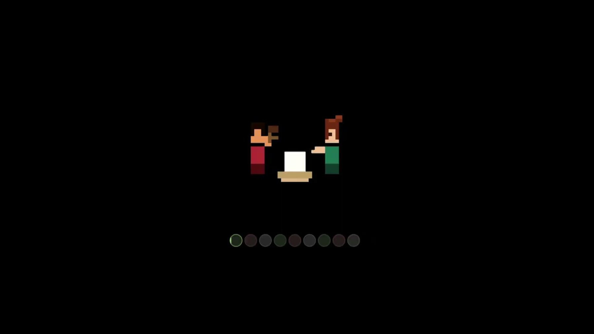
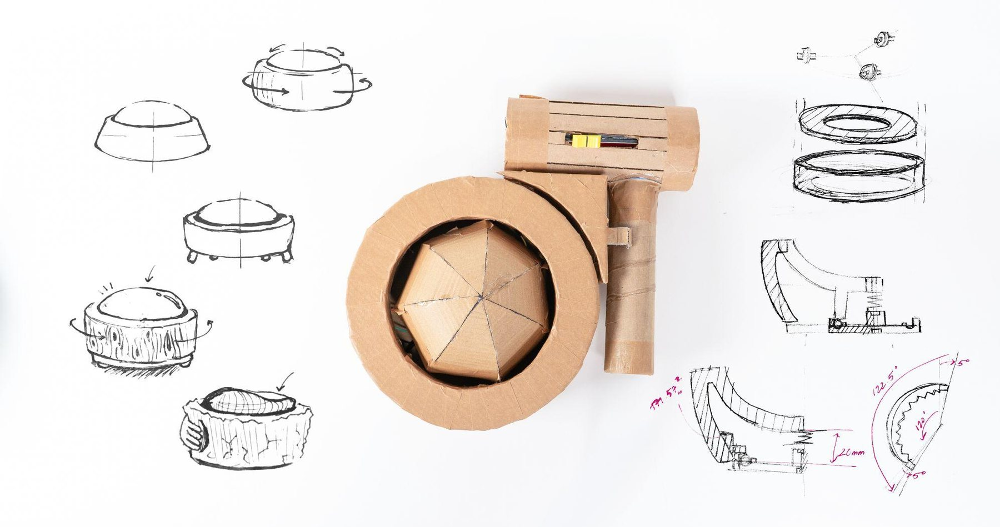
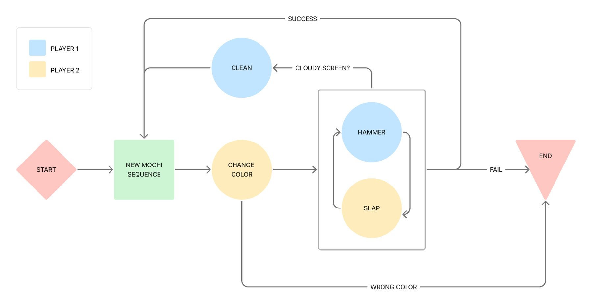
Context/Motivation
MochiMash was our first project in 4.043: Design Studio: Interaction Intelligence, where the brief was to create a one-dimensional game and a custom controller for it. The project introduced in-hardware sketching and prototyping, state diagrams, building our own electronics, and methods for evaluating and critiquing interaction design.
Problem Framing
Constrained to one dimension — a single row of pixels — we had to find ways to keep the game engaging. We found that large, exaggerated motions were a fun way to get players invested. We also needed a gameplay format that could live in 1D space, and were drawn to rhythm games for the nostalgia they held from our childhoods.
Process
Swivel mechanism
The bowl swivels so Player 1 can change the mochi's color to match the cues on screen. Because the mochi would take repeated impacts, I used a lazy susan mechanism rather than a more complex bearing assembly. It also left a rigid, stationary pole at the center to build the fold mechanism and electronics on.
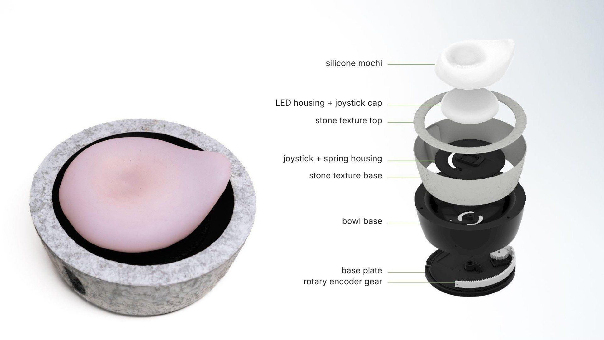
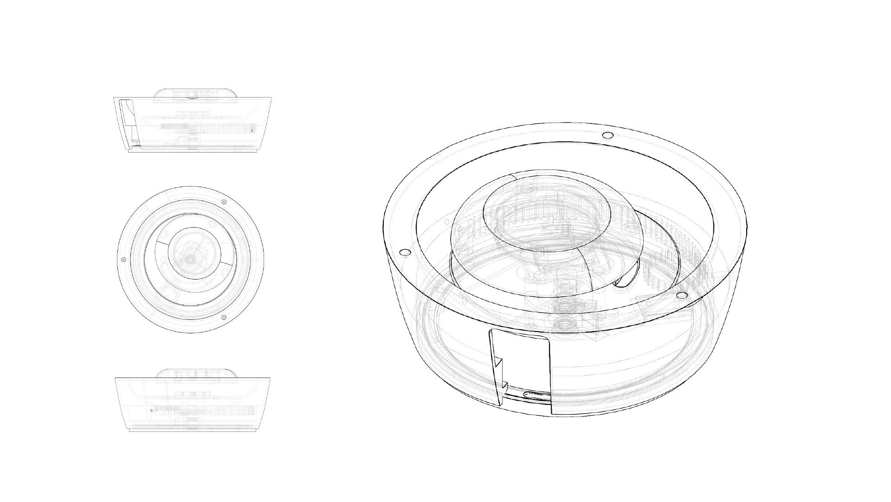
Sensing the fold
With only five weeks, we retrofitted available electronics wherever possible to leave room to experiment with materiality. The silicone-cast mochi is essentially an oversized joystick cap; because it was so heavy, I built a spring box to support its weight so the joystick could return to its origin. When the joystick reads x/y values outside a calibrated deadzone, the game registers the slap as a "fold."
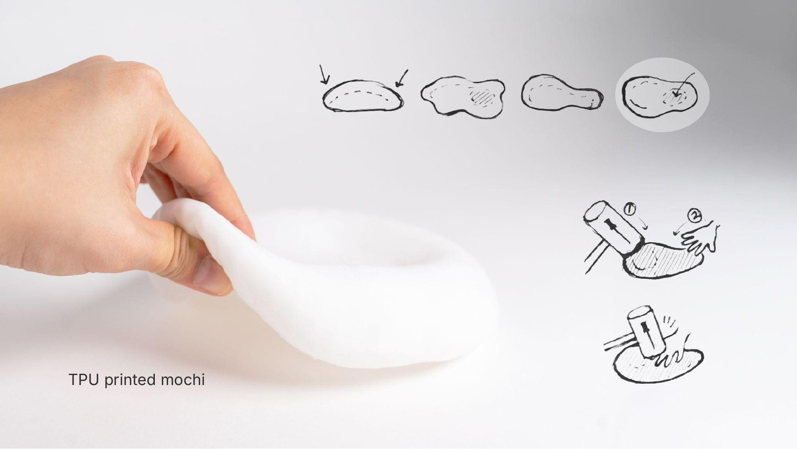
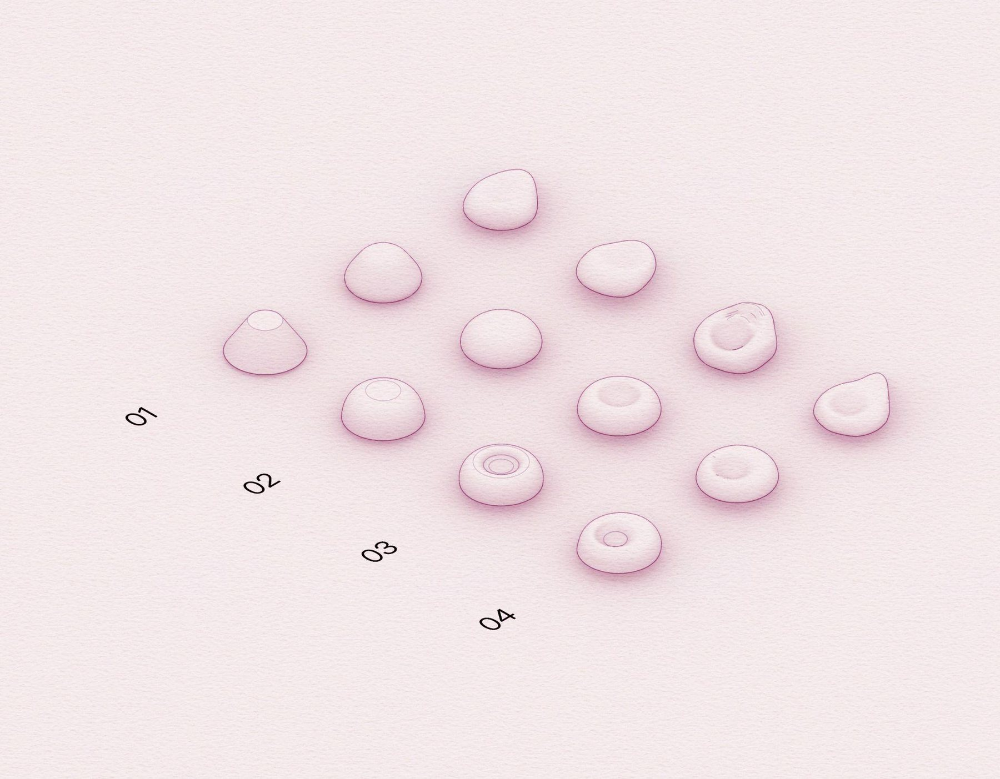
Sensing the pound
The hammer took several tries. A button under the hammer face didn't reliably click; moving all the sensing into the mochi made it hard to tell folds from pounds; and a capacitive sensor wasn't dependable. A force sensor was the most reliable, but real hits often weren't hard or square enough to register — until I designed a compliant mechanism under the hammer face, so any hit deflects its center beam firmly into the sensor.
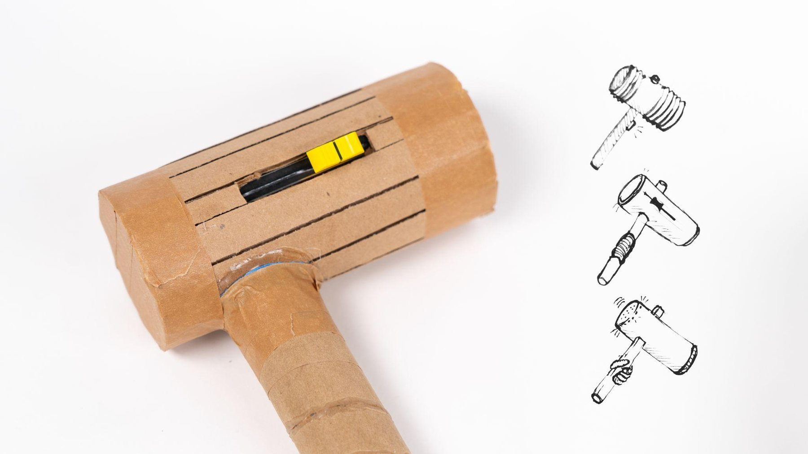
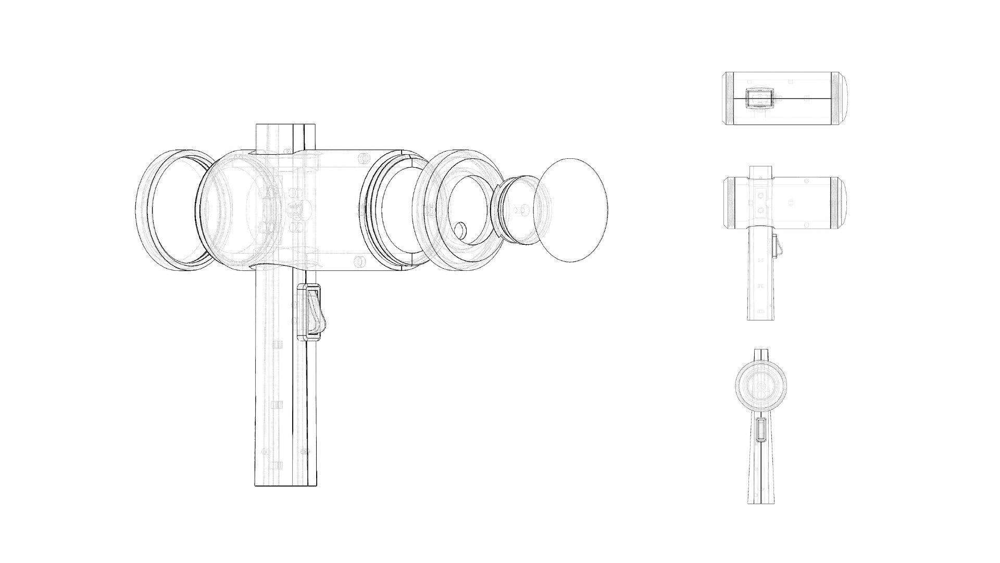
Materiality
With gameplay limited to one dimension, we wanted to deepen immersion through the controllers themselves: every input should feel satisfying and physical. We aimed to stay authentic, but with most of our five weeks already spent on ideation, turning a wooden hammer — let alone carving a stone bowl — wasn't feasible. Instead, we cast the mochi in soft silicone, printed the bowl in a carefully chosen PLA color with a texture applied to the CAD, and printed the hammer in wood-fill filament with the same textured CAD, which let us stain it to a satisfying finish.
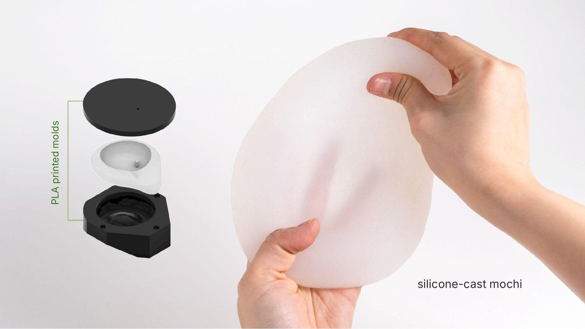
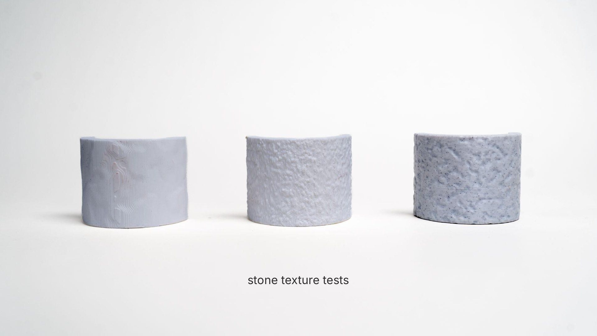
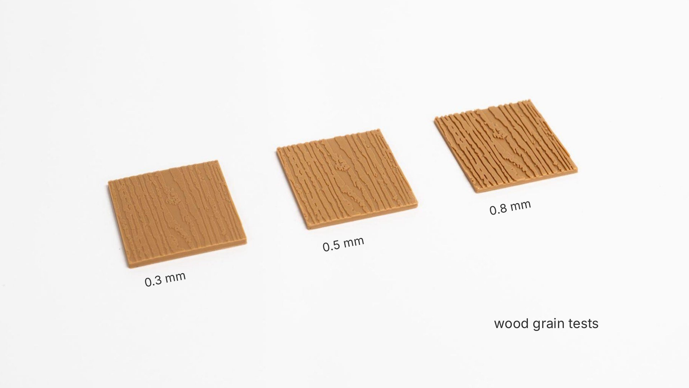
Room for Improvement
Though I ultimately brought all the subsystems together, I crammed in a lot of mechanisms out of my own love for cool, complex, over-the-top mechanics. That pushed me toward solutions that weren't necessarily ideal, just fun to design and fabricate. In hindsight, simpler — and perhaps more elegant — solutions would have freed up time to develop the digital game (maybe even add a second song) and saved me a few all-nighters.
Outcome
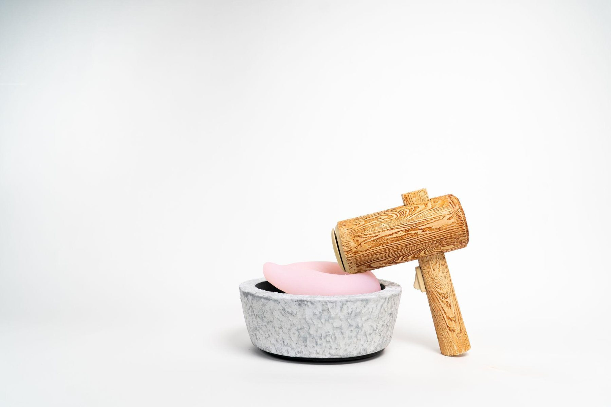
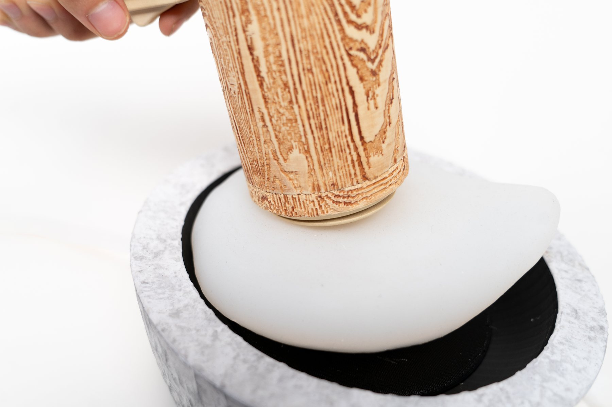
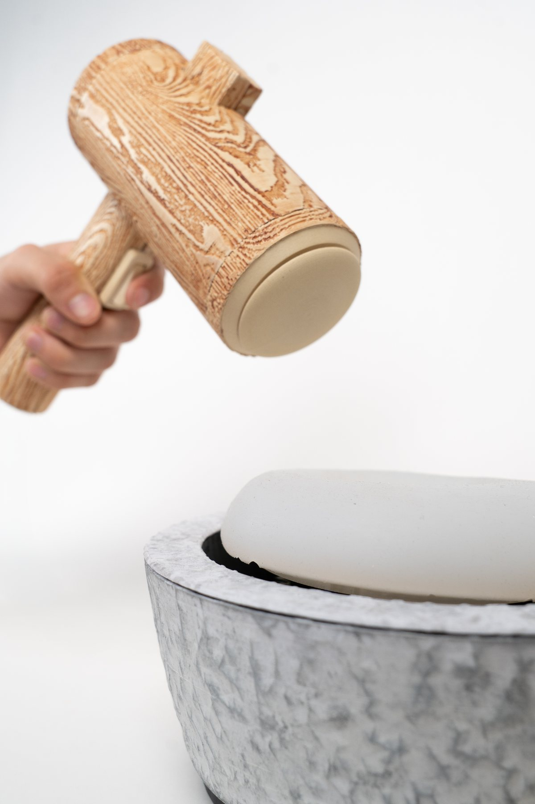
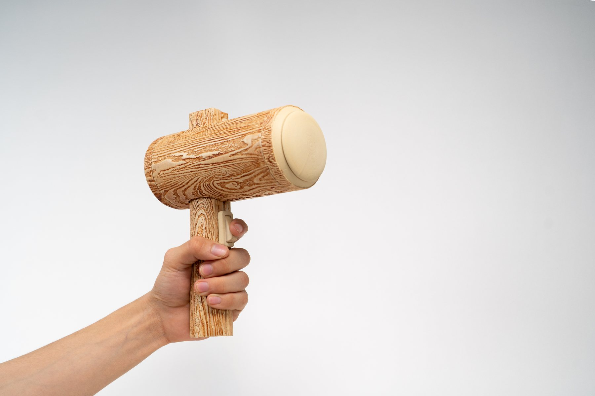
Reflection
MochiMash was my first real taste of the cost of over-engineering. I learned the hard way that the best solution is often the simplest one — and that every hour spent on a clever mechanism is an hour not spent on the experience it's meant to serve.